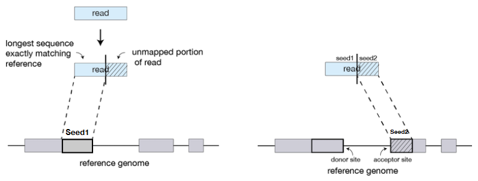

6 Transcriptomes: Experiment Design and RNA Sequence Data Processing
The above graphic shows the general flow of actions when it comes to working with RNA sequencing data (i.e., from the wet lab stuff to the actual data analysis later on).
6.1 Experimental Design
Experimental design is like setting up a plan for a science experiment. It’s super important because it helps us get the right kind of information to answer our questions. Imagine you’re trying to figure out something cool in biology – well, you need a good plan for your experiment.
First, you start with your big question, the one you really want to answer. This is called your “research question.” It’s like the main thing you want to find out. Once you know your question, you need to make sure you do the experiment in the right way.
That’s where experimental design comes in. It’s like making a game plan for your experiment. You figure out what kind of data you need and how much of it. This is crucial because if you collect the wrong data or not enough, you might not get good answers.
6.1.1 Principles of Experimental Design
There are a total of six to take note of:
Comparison
Comparison is like the main reason we do a science experiment. It’s the big “why” behind everything we’re testing. Imagine you want to know if something really works or if it’s different from how things normally are.
In science, we often compare two groups. It’s like having a “before” group and an “after” group. We call these groups different names, like “case vs. control,” “treatment vs. control,” or “mutant vs. wild-type.” These names tell us what we’re comparing.
The whole point of this comparison is to answer our main question. For example, let’s say we want to know if a new medicine really helps people get better. The “case” group would be the people getting the medicine, and the “control” group would be people not getting the medicine, so we can see if the medicine makes a big difference.
Replication
Replication is like a way to make sure our science experiments are trustworthy. When we measure things in experiments, there can be some mistakes or random errors. It’s kind of like when you play darts, and sometimes your throws are a bit off target even if you’re trying your best.
To deal with these errors, we do something called replication. It’s a bit like having a backup plan. We do the same experiment multiple times to see if we get similar results each time. We assume that each time we do the experiment, it’s like picking samples randomly from a big bag of marbles. This way, we can make sure our results aren’t just by chance.
Replication is super important because it helps us figure out if the differences we see in our experiments are for real or if they could have happened just because of random stuff. The more times we repeat the experiment (we call these repeats “replicates”), the more sure we can be about our results.
But here’s the tricky part: doing replication, especially in some types of experiments like sequencing, can be a bit expensive. So, scientists often aim to do three or more replicates per condition to strike a balance between cost and getting reliable results.
Blocking
Example of a Blocking Experiment Blocking in science is like a clever way to make our experiments more accurate. Imagine you’re doing an experiment, and there are some things that you know can affect the results but aren’t really what you’re studying. Blocking helps you deal with those things.
Here’s how it works: You group together similar things or “units” into special groups called “blocks.” These blocks are like teams of players in a game, and each team is as similar to each other as possible. So, if you’re studying plants, you might have one block of plants that are all the same age, another block of plants that have the same amount of sunlight, and so on.
The cool part is that by doing this, you’re making sure that any differences in your results are more likely to be because of the thing you’re actually studying. It’s like playing a game of soccer on a field with no bumps or slopes – it helps you focus on the game without worrying about uneven ground.
Randomization
Randomization in science is a bit like mixing things up randomly. Imagine you’re sharing candies with your friends, and you want it to be fair. So, instead of giving candies to your friends in a specific order, you close your eyes and give them candies randomly.
In experiments, randomization means doing things without any particular order or plan. It’s like flipping a coin to decide where each part of the experiment goes. For example, if you’re testing a new medicine, you don’t want to give it to one group of people just because they’re your friends. You want to make sure it’s all fair. So, you randomly choose who gets the medicine and who doesn’t.
Why is this important? Well, sometimes there are hidden things that can affect the results, things we might not even know about. Randomization helps us break any sneaky patterns or dependencies in the data. It’s like making sure everyone has an equal chance to be in any group, so we can be more sure that our results are because of what we’re testing, not because of something else.
Orthogonality
Orthogonality in science is a bit like doing different things in an experiment without them getting all mixed up. Imagine you’re painting a picture with different colors, and you want to know how much each color adds to your artwork. You don’t want the colors to blend together and make it hard to figure out their impact.
So, what scientists do is make sure that each thing they’re testing in an experiment can be measured separately, like having separate paintbrushes for each color. This way, they can figure out the effect of one thing without it being influenced by the others.
Let’s say you’re testing three different types of fertilizers on plants. You want to know how each fertilizer affects the plant’s growth. Orthogonality means you can figure out the impact of each fertilizer without them interfering with each other. It’s like saying, “Okay, I’ll test fertilizer A, see the results, and it won’t mess with the results of fertilizer B or C.”
Factorial Experiments
Imagine you’re in a science experiment where you want to know how different things, like temperature and humidity, affect plant growth. Instead of changing only one thing at a time, like just temperature or just humidity, you decide to change both things together. That’s what we call a factorial experiment.
Factorial experiments are like doing science experiments with multiple things happening at once. It’s like trying different combinations of factors to see how they all work together. So, in our plant experiment, you might try high temperature with low humidity, low temperature with high humidity, and so on.
The cool thing about factorial experiments is that they help us figure out not only how each factor affects things but also how they interact. It’s like saying, “When we change both temperature and humidity, do they work together to affect plant growth in a special way?”
6.1.1.1 Why Are These Principles Important?
These principles are super important in science because they help us do experiments in a smart and reliable way. Think of them as rules that scientists follow to make sure their experiments are accurate and make sense.
Models for Analyzing Data
When we collect data from experiments, we need to analyze it to understand what’s happening. These principles help us build models or methods for analyzing the data. It’s like having a special tool to figure out the answers from all the numbers we collect.
t-test and Two-way ANOVA
These are fancy names for methods we use to see if the results of our experiments are meaningful. The t-test helps us compare two groups to see if they are really different. The two-way ANOVA is like a tool to compare more than two groups. They help us know if what we see in our experiments is likely to be true or just random.
Estimating Statistical Power
This is like having a magic crystal ball to tell us how many times we need to do an experiment to be sure of our results. It helps us plan ahead. For example, it tells us how many times we should flip a coin to be sure if it’s really fair or not.
6.1.2 Experiment Designs for RNA Sequencing Data
When conducting RNA sequencing experiments, it’s important to plan things carefully. You need to make sure you have the right kind of data to answer your scientific questions effectively. To do this, there are some basic things you should keep in mind.
Firstly, you need to collect enough data points, which we call replicates. It’s generally recommended to have at least three replicates to ensure the results are reliable. Think of it like taking multiple measurements to be more certain of an answer.
Secondly, you should have sensible controls in your experiment. These controls help you compare what happens when you change something (like a treatment) to what happens when nothing changes (the control group). Controls are like a reference point to understand your results better.
Now, let’s talk about the amount of data you need. It’s essential to have enough sequencing coverage. Think of sequencing coverage as how many times you read each piece of RNA. More coverage can give you a clearer picture of what’s happening in your samples.
Next, consider the type of RNA you’re interested in. There are different methods to extract RNA, like total RNA or poly-A enrichment. Depending on your research question, you’ll choose the method that suits you best. For instance, in mammalian cells, most of the RNA is ribosomal RNA (rRNA), transfer RNA (tRNA), and only a small part is protein-coding mRNA. But if you’re interested in non-coding RNA, like microRNA, poly-A enrichment may not capture those.
6.1.2.1 Biological and Technical Replication
Data can vary in one of two ways:
Biological Variations
Example of a Biological Replication This just refers to variations in the data because of the test subjects themselves. This is the stuff that we’re interested in.
Technical Variations
Example of a Technical Replication This is variation because of how the data was collected (i.e., the experiment’s methodology). This is usually stuff that we don’t want (i.e., or unwanted noise in fancy speak).
6.1.2.2 RNA Samples in the Laboratory
When it comes to the performance of experiments in the lab, there are a few crucial things to consider, especially when dealing with biological samples.
Firstly, it’s important to keep in mind that once you’ve collected your cell samples, you often can’t separate different types of cells from each other later on. So, it’s best to have the purest samples possible from the start. Imagine trying to unmix colors once they’ve been mixed together – it’s quite challenging.
Another important factor is the potential degradation of mRNA, which is a type of genetic material. To prevent this, you need to be careful when collecting your samples. It’s essential to harvest the cells and store them quickly. Think of it like putting perishable food in the refrigerator to keep it fresh. Using things like liquid nitrogen or special RNA-preserving solutions (like RNAlater) can help protect the mRNA from breaking down.
Lastly, everyone in the lab needs to follow proper procedures and guidelines. This is like having a recipe when you’re cooking – you need to follow the steps precisely to get the best results. Proper guidance and training for lab personnel ensure that experiments are done correctly and reliably.
6.2 De novo RNA-Sequence Assembly
When you’re tasked with something called de novo assembly, it’s a bit like putting together a jigsaw puzzle without the picture on the box to guide you. But in this case, it’s not about puzzles; it’s about assembling genetic information, which is similar to what scientists do when they put together a genome, which is like a biological instruction manual.
To help with this task, scientists use tools that are like special equipment for assembling genetic information. These tools are actually variations of the ones used for genome assembly, kind of like how you might use different tools to build different types of things. One important thing to know is that all of these tools use de Bruijn graphs, which are like diagrams that help organize the genetic pieces.
Now, here’s a tricky part: when you’re doing de novo assembly for RNA, the result can be more fragmented compared to assembling a genome. Think of it like trying to put together a map of a city where the roads are broken into smaller pieces; it can be a bit more challenging. But scientists are continually improving these tools to make the process as accurate as possible.
6.2.1 Some Issues to Consider
Firstly, just like assembling genomes, RNA de novo assembly is quite computationally demanding. It requires a lot of computer power, including parallel processing and a substantial amount of memory. Think of it like needing a powerful computer to handle complex tasks, like running high-end video games.
To tackle this task, scientists use specific software tools designed for RNA assembly, such as Trans-ABySS, Trinity, Oases, and SOAPdenovo-trans. These tools are like specialized software programs created to help with the assembly process, much like using software for video editing or graphic design.
One challenging aspect of RNA de novo assembly is that it can be difficult to separate different types of splice variants when you don’t have a complete genome available for reference. Splice variants are like different versions of a gene’s instructions, and without the full genome, it’s harder to tell them apart.
After the assembly, researchers often cluster the results into gene models. This is like organizing different puzzle pieces into groups that belong together, helping make sense of the genetic information.
Lastly, there are versions of RNA de novo assembly that are guided by a known genome. These versions use information from a reference genome to estimate the transcriptome, which is like having a map to help put the genetic puzzle together more accurately. It’s like using a reference book to solve a tricky crossword puzzle.
6.3 RNA Sequencing Data Processing
The first steps to this are all super similar to the previous weeks’ lecture on quality control and read trimming (i.e., lecture 3).
6.3.1 Read Mapping
When we talk about aligning reads to a genome, it’s like trying to find the right spot for puzzle pieces in a jigsaw puzzle, but with a twist. The problem is that the puzzle pieces (the reads) might have some mistakes or differences, and the puzzle board (the genome) can also have variations.
The big challenge here is finding the best, most accurate spot for lots and lots of puzzle pieces (reads) when they might not fit perfectly because of errors or differences in the genetic code. Imagine doing this with thousands of pieces – it can get pretty complicated!
To solve this puzzle, scientists use a general solution. They know that the puzzle board (genome) stays the same for every piece they’re trying to place. So, they create something like an index or a map that helps them find the right spots quickly. It’s similar to having a map of a city, and no matter how many people are looking for different places, they can all use the same map because the city doesn’t change.
6.3.1.1 Aligning Reads to the Genome
hen we talk about aligning reads to a genome, it’s like trying to match pieces from one puzzle (the reads) to another (the genome). There are a few ways to do this, like using a tool called BLAST, which is similar to trying to match puzzle pieces by hand. However, BLAST can be quite slow when dealing with a large number of reads, making it impractical for many scientific purposes.
To speed up the process, scientists have come up with a better solution, like using something called the Burrows-Wheeler transform. This is like having a special machine that can quickly and efficiently find the best matches between the puzzle pieces (reads) and the puzzle board (genome).
Scientists have implemented this Burrows-Wheeler transform in software tools such as BWA-mem, Bowtie2, and SOAP. These tools are like computer programs that use the special machine to find matches between the reads and the genome, making the process much faster and more practical for scientific research.
6.3.2 Splicing Aware Aligners
The thing about tools that directly map reads to the genome is that they don’t really work for RNA sequencing (at least not when it comes to RNA sequencing data that hasn’t been processed in some way). So, there are tools like HISAT2, Tophat2, and STAR aligners.
6.3.2.1 Tophat

Tophat is like a detective for your genetic data. Its main idea is to figure out which parts of your genetic material, called “reads,” can be matched to the genome. Think of the genome as a big instruction manual, and the reads are like pieces of text from that manual.
What Tophat does is it finds the reads that perfectly match the genome. These matching reads represent the “exons” of genes, which are like specific paragraphs in the instruction manual. Tophat identifies these exons and helps scientists understand which parts of the genome are being actively used by the cell.
But here’s where it gets interesting. Tophat also looks at the reads that don’t match the genome. These unmatched reads are like clues in a mystery novel. They suggest that something special is happening, called splicing. Splicing is like rearranging paragraphs in the instruction manual to create different versions of the gene’s instructions. Tophat helps identify these splicing sites, which are crucial for understanding how genes work.
6.3.2.2 STAR
STAR works in several ways:
Indexing
Imagine you have a giant book, which is like the genome. STAR’s first step is to create an index for this book. This index is like a quick reference guide that helps you find specific information in the book much faster.
Now, think of the genetic reads as sentences from the book. STAR’s job is to find the best match for these sentences in the book. It does this by looking for the longest sequence of words in the sentences that match something in the book.

Unmapping Parts of STAR But here’s where STAR does something clever. It doesn’t just stop at finding the best matches; it also looks at the parts of the sentences that don’t match anything in the book. It’s like finding sentences that are partly in another language or from a different book. These unmatched parts can tell you something important, like hints or clues.
Clustering and Stitching
Imagine you have a bag of puzzle pieces, and each piece is like a small part of a picture. STAR’s job is to group these pieces together in a smart way.
First, STAR looks at the pieces that are close to each other, like putting together pieces that are next to each other in the puzzle. This is called clustering. It’s like collecting all the sky pieces, all the grass pieces, and so on, so you can start building sections of the puzzle.
But not all puzzle pieces fit perfectly right away. Some might have a small gap or a piece missing, similar to how genetic reads might have small differences. STAR doesn’t give up; it’s like a puzzle master who can adjust and fill in the gaps, even when there are mistakes or missing parts. This process of adjusting and matching is called stitching.
6.3.3 Quantification for RNA Sequence Analyses
Think of this process as putting together a jigsaw puzzle with some special helpers.
First, you have your genetic reads, which are like puzzle pieces. Tools like TopHat, HISAT, or STAR are like expert puzzle solvers. Their job is to figure out how these reads match up with the reference genome, similar to how puzzle solvers match pieces to the picture on the puzzle box.
Once these tools have aligned the reads, they not only assign the reads to specific parts of genes (exons), but they also figure out how these gene parts connect, kind of like finding the links between pieces in a puzzle.
Now, think of Cufflinks or Stringtie as the experts who take these partially solved puzzles and complete them. They estimate what the complete gene models should look like based on the connections found by the alignment tools. It’s like creating a full picture from the partially assembled puzzle.
Moreover, Cufflinks or Stringtie also quantify how active each gene is, sort of like measuring how bright different parts of the puzzle are. This helps scientists understand which genes are working hard and which ones are not as active.
6.4 Pseudoalignment
Imagine you have a library of books, and each book represents a gene in the transcriptome. Instead of reading every word in the books (which can be time-consuming), this method is like flipping through the pages quickly to see which books are a good match for a specific sentence (the genetic read).
The advantage of this approach is speed. It’s much faster because it doesn’t require reading every word in every book (gene) like traditional methods. Instead, it quickly figures out which books (transcripts) the sentence (read) might belong to.
However, there are some downsides to this speedier approach. One drawback is that it may not provide as detailed information as the traditional method. It tells you which books (transcripts) the sentence (read) could belong to, but it doesn’t pinpoint the exact location within each book (transcript). So, you lose some precision.
To make this rapid searching possible, these tools employ something called de Bruijn graphs. Think of this as a clever way of organizing information for quick searches, like using an efficient filing system to find documents in a library.
Two popular tools for this approach are kallisto and salmon. They take two main steps: First, they create an index, which is like building a fast-reference guide for the library of books. Then, they perform the search, quickly identifying which books (transcripts) match the sentences (reads).
6.4.1 Quantification
Imagine you have a bunch of puzzle pieces (genetic reads) and you’ve already figured out which parts of the puzzle (genes) these pieces belong to using a fast mapping method. However, there’s a bit of complexity here. Sometimes, one puzzle piece (read) can fit into multiple puzzles (gene models).
This is where pseudoalignment comes in, and it’s somewhat similar to what tools like Cufflinks do. It’s like trying to figure out how many pieces of each puzzle you have, but with a twist. Instead of directly counting the pieces, you use a sophisticated approach, kind of like a detective trying to solve a mystery.
In this approach, you create a probabilistic model, which is like a set of rules that help you estimate how many pieces of each puzzle you have. These rules are based on the idea of maximum likelihood, which means finding the most likely answer given the data you have. It’s a bit like making an educated guess about the number of pieces for each puzzle based on the clues you’ve gathered.
In practical terms, you want to find the best estimates for transcript abundances, which is like figuring out how many pieces belong to each puzzle. You do this by making sure that the observed coverage of gene parts (exons) in your reads matches the model’s predictions as closely as possible.
6.5 Normalization
Imagine you have two baskets, and each basket contains different types of fruits. The goal is to compare the number of fruits in each basket, but there are two challenges:
Different Library Sizes
In one basket, there may be more fruits, and in the other, there could be fewer. This difference in the total number of fruits in each basket makes it tricky to compare them directly. It’s like trying to figure out which basket has more without considering their sizes.
Different Gene Lengths
Not all fruits are the same size; some are larger, and some are smaller. Similarly, genes in genetic data can have varying lengths. This complicates comparisons because you need to account for these differences in gene sizes when comparing the two baskets.
Normalization in RNA-seq is like a magic tool that helps you address these problems. It’s like resizing the baskets and the fruits so that you can make a fair comparison.
For the first issue, normalization adjusts the basket sizes so that they’re the same, making it easier to compare the number of fruits in each. This way, you’re not unfairly favoring one basket over the other just because it started with more or fewer fruits.
For the second issue, normalization scales the size of the fruits (gene lengths) so that they are comparable. It’s like resizing the fruits to a common standard, ensuring that you’re not giving more weight to larger fruits when comparing the two baskets.
6.5.1 Transcripts per Million (i.e., TPM)
Imagine you have a collection of different-sized recipe books (genes), and you want to know how popular each recipe book is in terms of the number of recipes inside (reads). However, the recipe books vary in size, making it challenging to compare them directly.
TPM normalization is like a clever way of standardizing and making these numbers “prettier” for easy comparison.
Here’s how it works:
Divide Read Counts by Gene Length
First, you count the number of reads that belong to each recipe book (gene). To make things fair, you divide these counts by the length of each recipe book in kilobases (KB). This gives you “reads per kilobase” (RPK), which is like figuring out how many recipes are in each kilobase of the book.
Sum RPK and Scale to a Million
You add up all the RPK values for all the recipe books (genes). This sum represents the total number of “recipes per kilobase” (sum RPK). To make the numbers look neater, you divide this sum by a million, creating a scaling factor (S).
Calculate TPM
Finally, to find the Transcripts per Million (TPM) for each recipe book (gene), you divide the RPK value for that gene by the scaling factor S. This normalization tells you how abundant each gene is relative to the total number of recipes per million kilobases.
In simpler terms, TPM is like a way of comparing how popular each recipe book is, taking into account their sizes. It’s the preferred method for RNA-seq normalization nowadays because it helps describe the relative abundance of reads assigned to each gene in a library. So, it’s like getting a clear picture of which recipe books are the most popular in your collection, considering their different sizes.